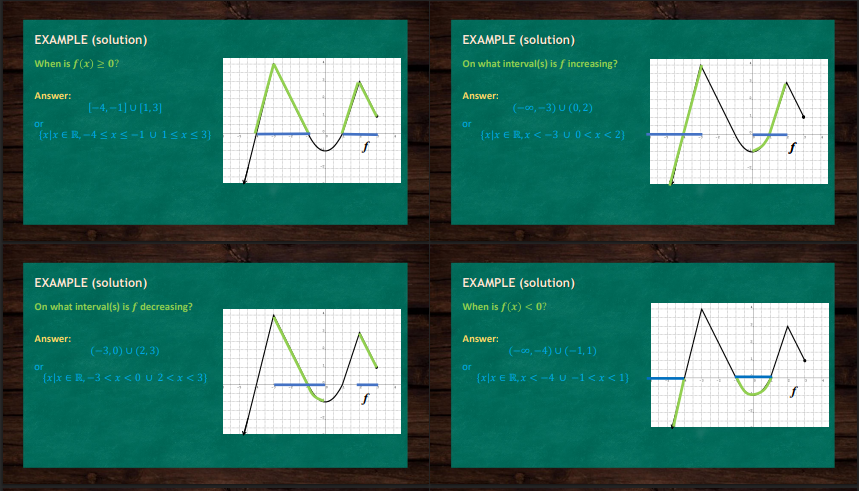

Top Left (Inequalities:
𝑓
(
𝑥
)
>
0
f(x)>0)
Give the corresponding x-values whose y-values are positive — look at the graph above the x-axis.
For the graph on the right, the values of
𝑥
x where
𝑓
(
𝑥
)
f(x) is greater than zero is the interval
(
−
3
,
3
)
(−3,3), or
{
𝑥
∣
𝑥
∈
𝑅
,
−
3
<
𝑥
<
3
}
{x∣x∈R,−3
Top Left (Intercepts) An x-intercept is the x-coordinate of the point where the y-value is zero, which means it is the x-coordinate of the point where the graph crosses the x-axis. NOTE: A function can have multiple x-intercepts. A y-intercept is the y-coordinate of the point where the x-value is zero, which means it is the y-coordinate of the point where the graph crosses the y-axis. NOTE: A function can only have one y-intercept. If it has two or more y-intercepts, then it is not a function because it will fail the vertical line test. The "zero" of a function is the value 𝑥 x, wherein 𝑓 ( 𝑥 ) = 0 f(x)=0. (An input value that produces an output of zero) NOTE: x-intercept is the same as the ZERO of a function. Top Right (Example Instructions) Given the graph of 𝑓 f on the right, determine the following characteristics of 𝑓 f: Domain of 𝑓 f Range of 𝑓 f When is 𝑓 ( 𝑥 ) ≥ 0 f(x)≥0? On what interval(s) is 𝑓 f increasing? On what interval(s) is 𝑓 f decreasing? When is 𝑓 ( 𝑥 ) < 0 f(x)<0? What is/are the x-intercept(s)? What is the y-intercept? Bottom Left (Example: Domain) Domain of 𝑓 f: Answer: ( − ∞ , 3 ] (−∞,3] or { 𝑥 ∣ 𝑥 ∈ 𝑅 , 𝑥 ≤ 3 } {x∣x∈R,x≤3} Bottom Right (Example: Range) Range of 𝑓 f: Answer: ( − ∞ , 4 ] (−∞,4] or { 𝑓 ( 𝑥 ) ∣ 𝑓 ( 𝑥 ) ∈ 𝑅 , 𝑓 ( 𝑥 ) ≤ 4 } {f(x)∣f(x)∈R,f(x)≤4} or { 𝑦 ∣ 𝑦 ∈ 𝑅 , 𝑦 ≤ 4 } {y∣y∈R,y≤4}
The third slide focuses on analyzing the behavior and values of a function based on its graph, specifically addressing questions about when the function is greater than or equal to zero, when it is increasing or decreasing, and when it is less than zero. Each section highlights how to determine the intervals where these conditions are true by observing the graph’s shape and direction. For instance, the function is greater than or equal to zero where the graph lies on or above the x-axis, and it is increasing where the graph rises from left to right. Conversely, the function is decreasing where the graph falls from left to right and is less than zero where it dips below the x-axis. The slide uses both interval notation and set builder notation to describe these intervals, reinforcing a complete understanding of function analysis.

X-intercepts or zero(s): -4, -1, and 1 Y-intercept: -1